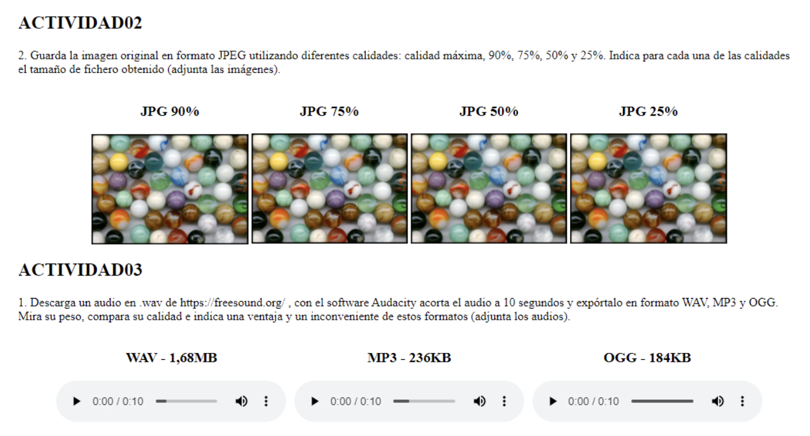
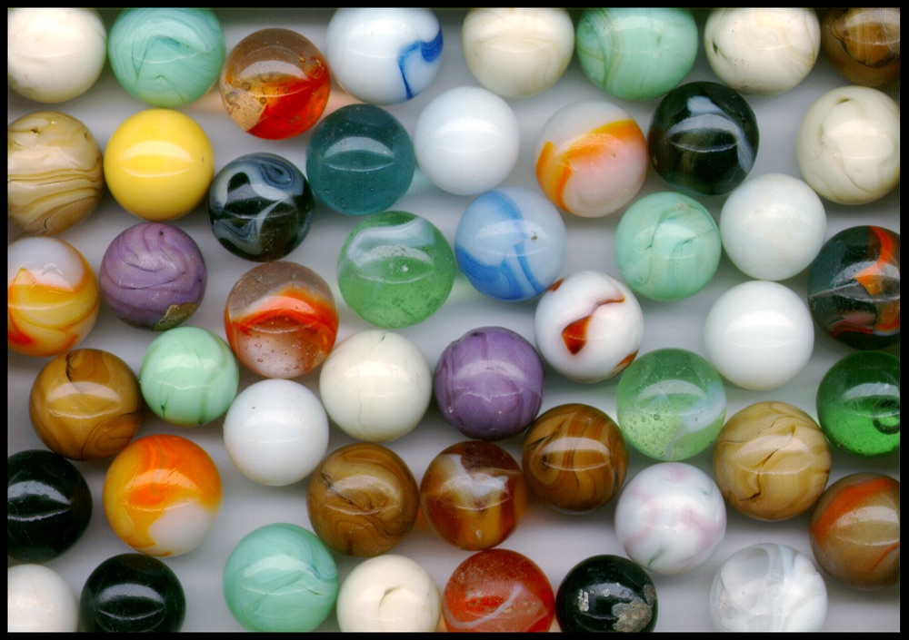

Descarga un audio en .wav de https://freesound.org/ , con el software Audacity acorta el audio a 10 segundos y expórtalo en formato WAV, MP3 y OGG.
Crea una web con las imágenes JPG de la actividad anterior comprimidas al 90, 75, 50 y 25%.
Añade a la web los audios de 10segundos en formato WAV , MP3 y OGG mostrando el controlador para cada audio.
La web ha de quedar aproximadamente con el siguiente aspecto:

JPG 90%JPG 75%

JPG 50%JPG 25%
WAV
MP3
OGG
Ejercicio 4. Animaciones CSS
Añade con CSS una transición a la primera imagen para que cuando el ratón se sitúe encima su anchura pase a ser el doble y se desplaze 110px hacia abajo.
Añade con CSS una animación a la segunda imagen para que cuando el ratón se sitúe encima gire primero 25 grados a la derecha y luego 25 grados a la izquierda y luego 100px hacia arriba.
Nota: el estilo para girar un elemento es: transform: rotate(25deg);
En la siguiente imagen se muestra un ejemplo del resultado: